Environmental Impact Assessment (EIA): Framework & Protocols
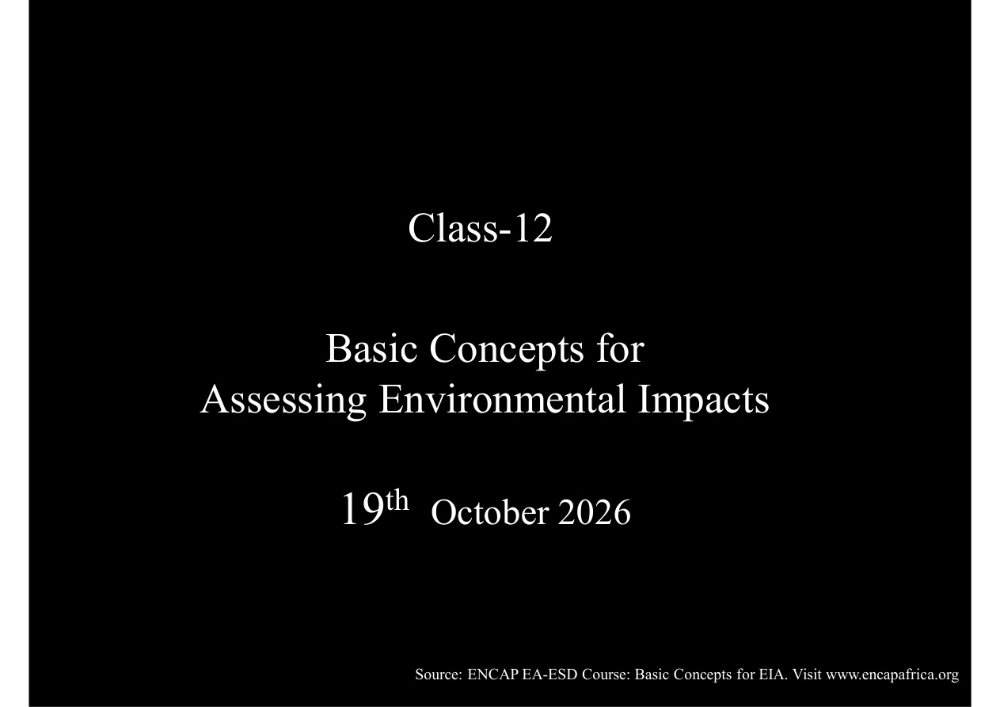
Environmental Impact Assessment (EIA) Principles and Framework
- •Source: ENCAP EA-ESD Course: Basic Concepts for EIA. Visit www.encapafrica.org Basic Concepts for Assessing Environmental Impacts 19th October 2026
Environmental Impact Assessment (EIA) evaluates the environmental consequences of a proposed development before statutory approval. Under India's EIA Notification 2006, projects undergo Screening to classify them into Category A (central clearance) or Category B (state clearance), followed by Scoping to define formal Terms of Reference (ToR) and baseline monitoring criteria.
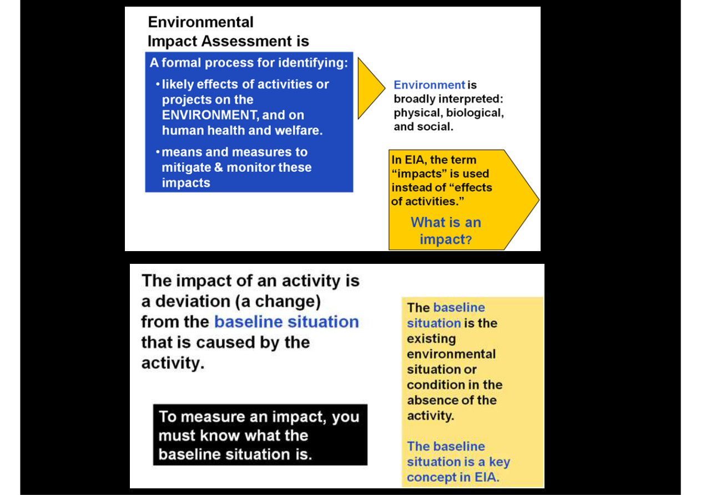
Statutory EIA Process Workflow Under Indian Notification 2006
Visual figure slide. See the high-resolution render on the left.
Environmental Impact Assessment (EIA) evaluates the environmental consequences of a proposed development before statutory approval. Under India's EIA Notification 2006, projects undergo Screening to classify them into Category A (central clearance) or Category B (state clearance), followed by Scoping to define formal Terms of Reference (ToR) and baseline monitoring criteria.
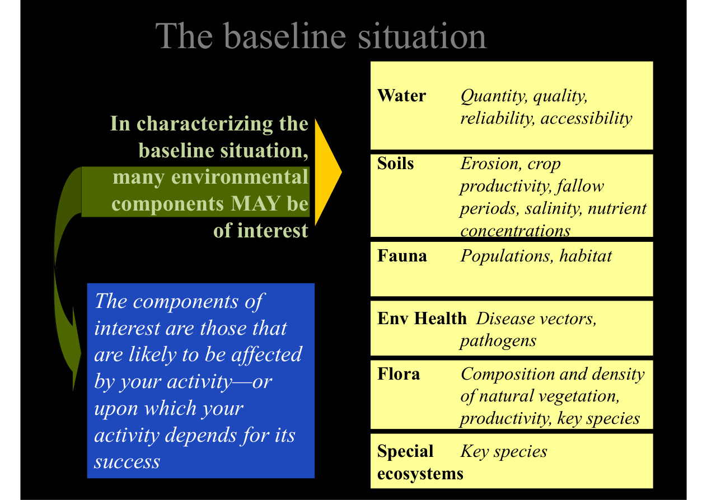
The baseline situation
- •The baseline situation In characterizing the baseline situation, many environmental
The baseline situation: The baseline situation In characterizing the baseline situation, many environmental. This material establishes quantitative limits, operational trade-offs, and core exam principles for Lecture 12.
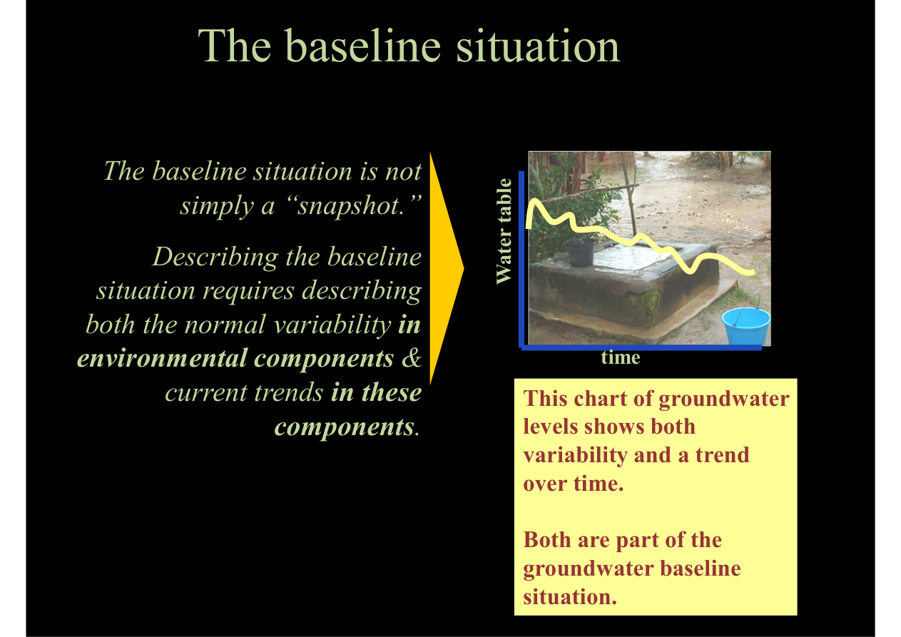
The baseline situation
- •The baseline situation The baseline situation is not simply a “snapshot.” Describing the baseline
The baseline situation: The baseline situation The baseline situation is not simply a “snapshot.” Describing the baseline. This material establishes quantitative limits, operational trade-offs, and core exam principles for Lecture 12.
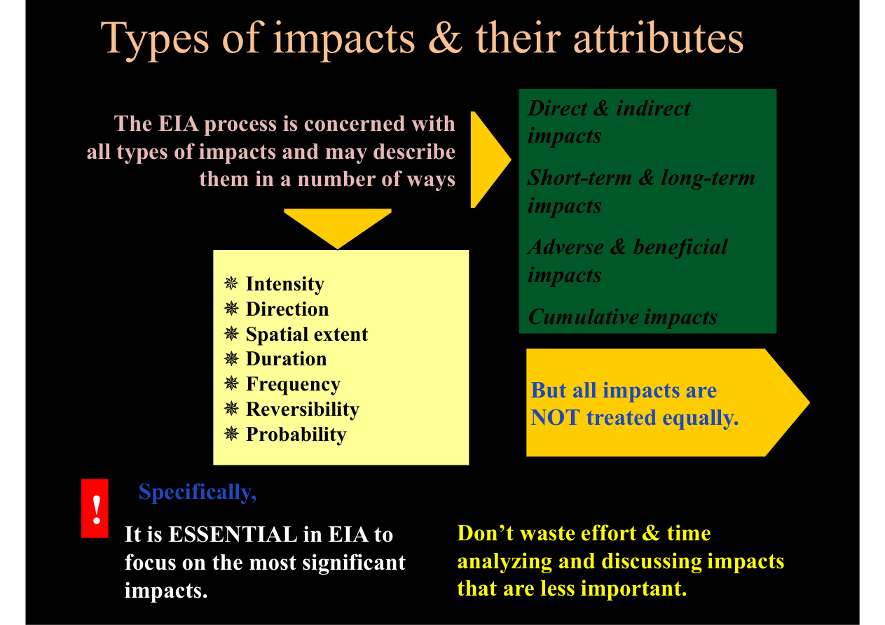
Types of impacts & their attributes
- •Types of impacts & their attributes Direct & indirect impacts Short-term & long-term
Types of impacts & their attributes: Types of impacts & their attributes Direct & indirect impacts Short-term & long-term. This material establishes quantitative limits, operational trade-offs, and core exam principles for Lecture 12.
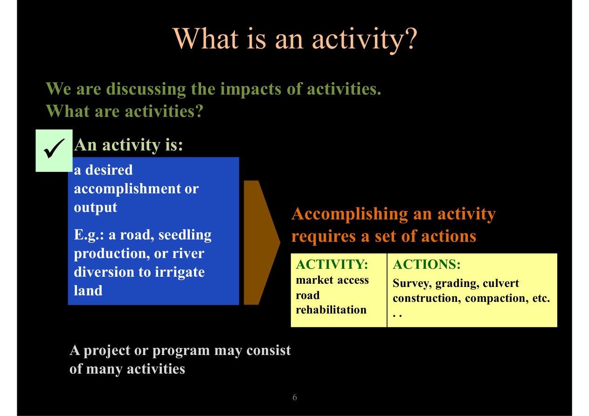
What is an activity?
- •What is an activity? ACTIONS: Survey, grading, culvert construction, compaction, etc.
What is an activity?: What is an activity? ACTIONS: Survey, grading, culvert construction, compaction, etc. This material establishes quantitative limits, operational trade-offs, and core exam principles for Lecture 12.
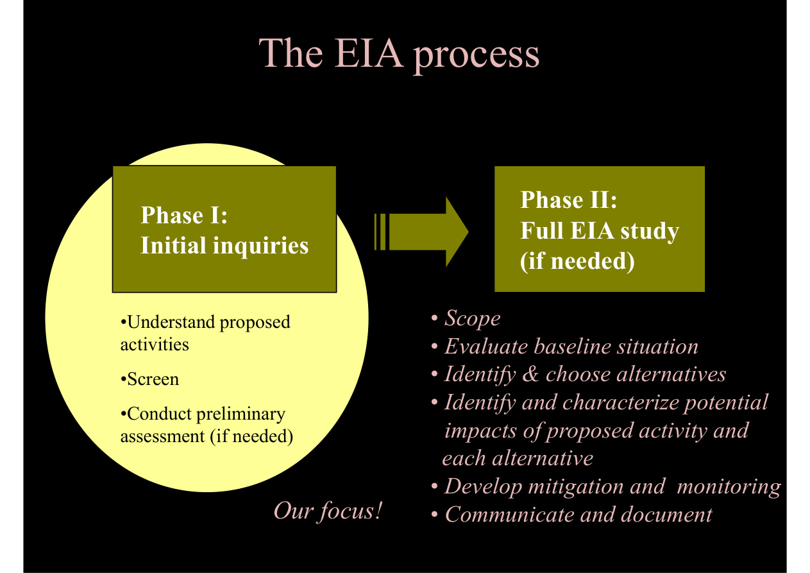
The EIA process
- •The EIA process • Scope • Evaluate baseline situation • Identify & choose alternatives
Environmental Impact Assessment (EIA) evaluates the environmental consequences of a proposed development before statutory approval. Under India's EIA Notification 2006, projects undergo Screening to classify them into Category A (central clearance) or Category B (state clearance), followed by Scoping to define formal Terms of Reference (ToR) and baseline monitoring criteria.
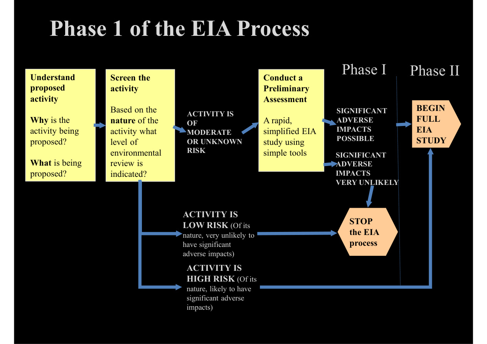
Baseline Environmental Characterization and Prediction Trajectories
- •Phase 1 of the EIA Process Screen the activity Based on the
Environmental Impact Assessment (EIA) evaluates the environmental consequences of a proposed development before statutory approval. Under India's EIA Notification 2006, projects undergo Screening to classify them into Category A (central clearance) or Category B (state clearance), followed by Scoping to define formal Terms of Reference (ToR) and baseline monitoring criteria.
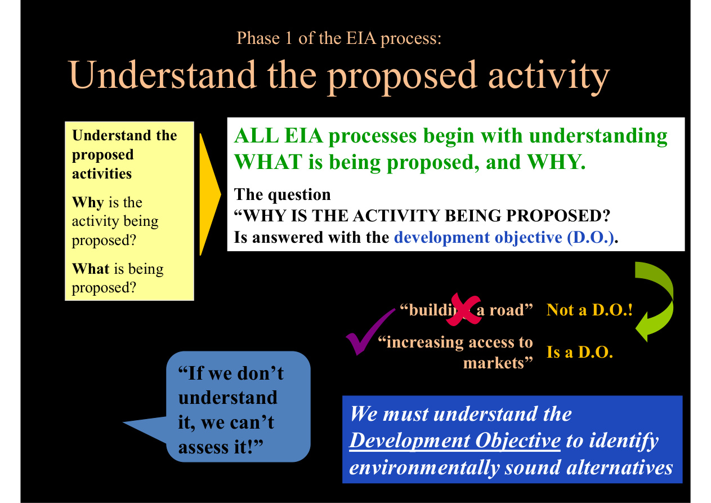
Phase 1 of the EIA process:
- •Phase 1 of the EIA process: Understand the proposed activity Understand the proposed
Environmental Impact Assessment (EIA) evaluates the environmental consequences of a proposed development before statutory approval. Under India's EIA Notification 2006, projects undergo Screening to classify them into Category A (central clearance) or Category B (state clearance), followed by Scoping to define formal Terms of Reference (ToR) and baseline monitoring criteria.
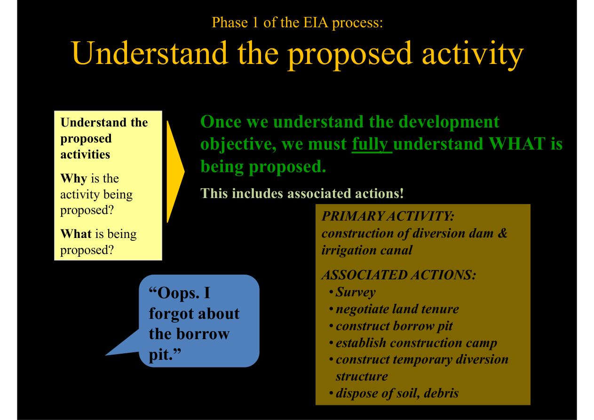
Phase 1 of the EIA process:
- •Phase 1 of the EIA process: Understand the proposed activity Understand the proposed
Environmental Impact Assessment (EIA) evaluates the environmental consequences of a proposed development before statutory approval. Under India's EIA Notification 2006, projects undergo Screening to classify them into Category A (central clearance) or Category B (state clearance), followed by Scoping to define formal Terms of Reference (ToR) and baseline monitoring criteria.
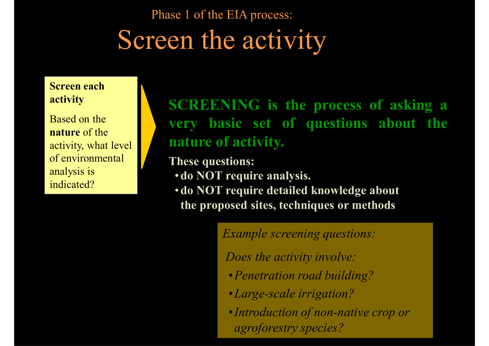
Phase 1 of the EIA process:
- •Phase 1 of the EIA process: Screen the activity Screen each activity
Environmental Impact Assessment (EIA) evaluates the environmental consequences of a proposed development before statutory approval. Under India's EIA Notification 2006, projects undergo Screening to classify them into Category A (central clearance) or Category B (state clearance), followed by Scoping to define formal Terms of Reference (ToR) and baseline monitoring criteria.
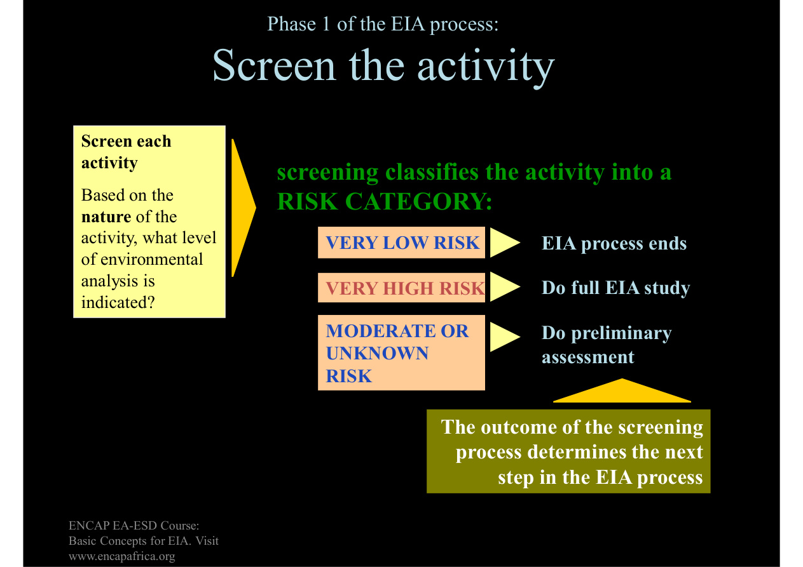
ENCAP EA-ESD Course:
- •ENCAP EA-ESD Course: Basic Concepts for EIA. Visit www.encapafrica.org Phase 1 of the EIA process:
Environmental Impact Assessment (EIA) evaluates the environmental consequences of a proposed development before statutory approval. Under India's EIA Notification 2006, projects undergo Screening to classify them into Category A (central clearance) or Category B (state clearance), followed by Scoping to define formal Terms of Reference (ToR) and baseline monitoring criteria.
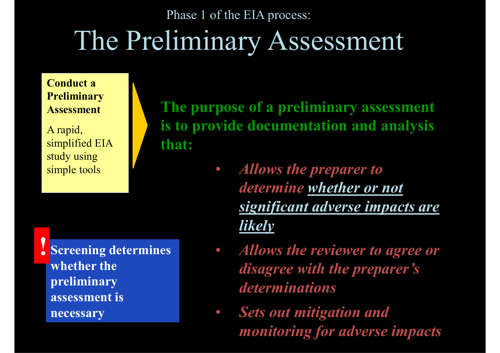
Phase 1 of the EIA process:
- •Phase 1 of the EIA process: The Preliminary Assessment Conduct a Preliminary
Environmental Impact Assessment (EIA) evaluates the environmental consequences of a proposed development before statutory approval. Under India's EIA Notification 2006, projects undergo Screening to classify them into Category A (central clearance) or Category B (state clearance), followed by Scoping to define formal Terms of Reference (ToR) and baseline monitoring criteria.
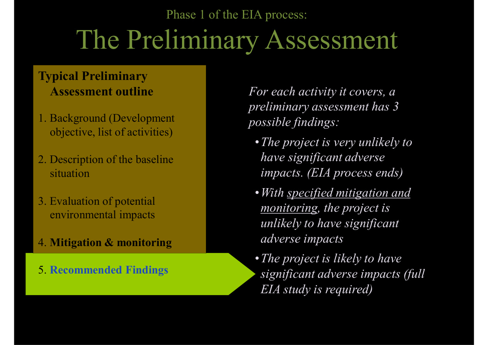
Phase 1 of the EIA process:
- •Phase 1 of the EIA process: The Preliminary Assessment Typical Preliminary Assessment outline
Environmental Impact Assessment (EIA) evaluates the environmental consequences of a proposed development before statutory approval. Under India's EIA Notification 2006, projects undergo Screening to classify them into Category A (central clearance) or Category B (state clearance), followed by Scoping to define formal Terms of Reference (ToR) and baseline monitoring criteria.
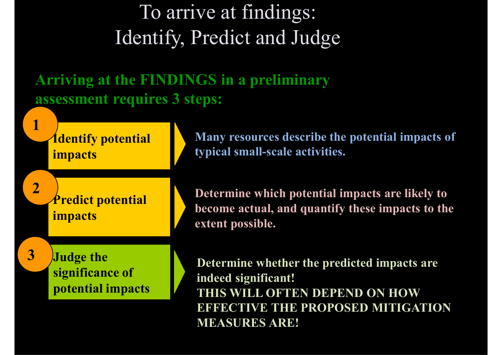
To arrive at findings:
- •To arrive at findings: Identify, Predict and Judge Identify potential impacts
To arrive at findings:: To arrive at findings: Identify, Predict and Judge Identify potential impacts. This material establishes quantitative limits, operational trade-offs, and core exam principles for Lecture 12.
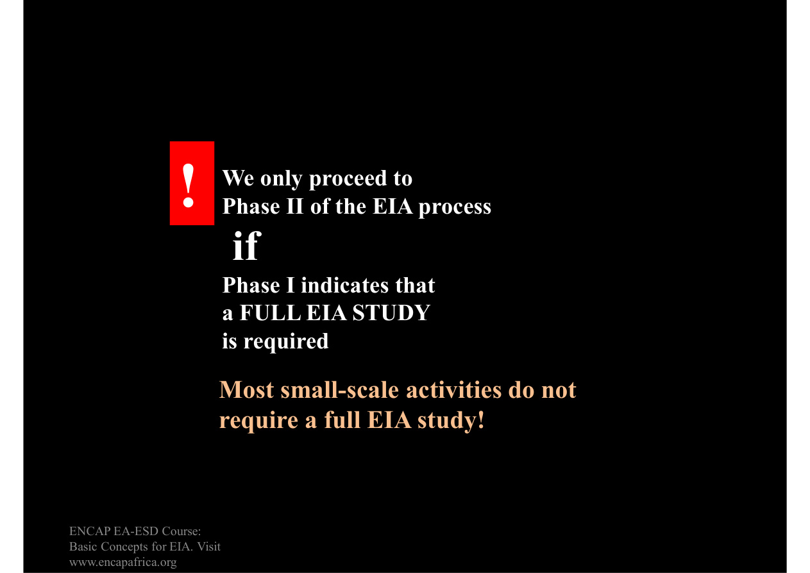
ENCAP EA-ESD Course:
- •ENCAP EA-ESD Course: Basic Concepts for EIA. Visit www.encapafrica.org We only proceed to
Environmental Impact Assessment (EIA) evaluates the environmental consequences of a proposed development before statutory approval. Under India's EIA Notification 2006, projects undergo Screening to classify them into Category A (central clearance) or Category B (state clearance), followed by Scoping to define formal Terms of Reference (ToR) and baseline monitoring criteria.
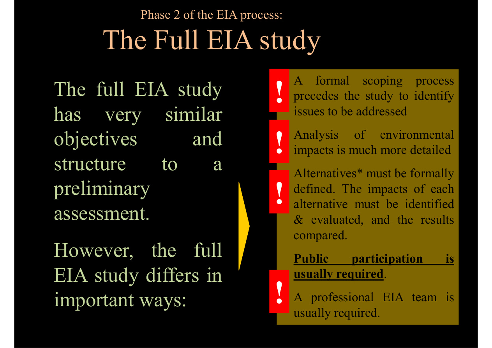
Phase 2 of the EIA process:
- •Phase 2 of the EIA process: The Full EIA study The full EIA study has
Environmental Impact Assessment (EIA) evaluates the environmental consequences of a proposed development before statutory approval. Under India's EIA Notification 2006, projects undergo Screening to classify them into Category A (central clearance) or Category B (state clearance), followed by Scoping to define formal Terms of Reference (ToR) and baseline monitoring criteria.
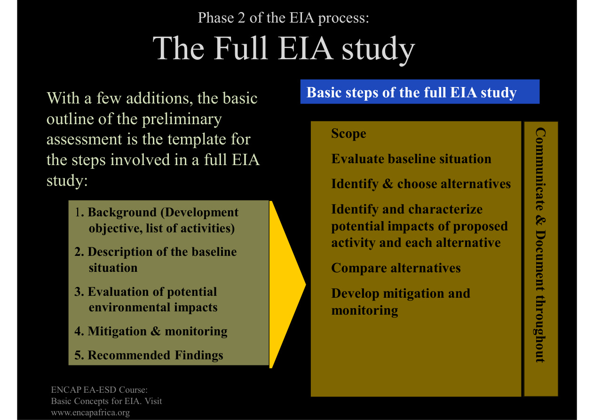
ENCAP EA-ESD Course:
- •ENCAP EA-ESD Course: Basic Concepts for EIA. Visit www.encapafrica.org Phase 2 of the EIA process:
Environmental Impact Assessment (EIA) evaluates the environmental consequences of a proposed development before statutory approval. Under India's EIA Notification 2006, projects undergo Screening to classify them into Category A (central clearance) or Category B (state clearance), followed by Scoping to define formal Terms of Reference (ToR) and baseline monitoring criteria.
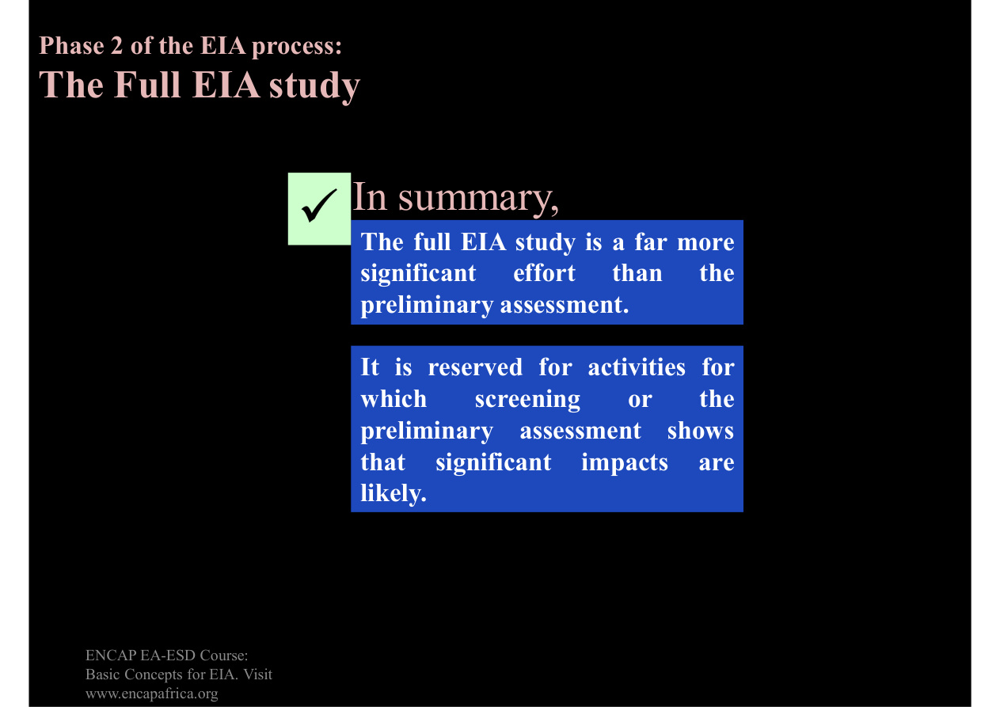
ENCAP EA-ESD Course:
- •ENCAP EA-ESD Course: Basic Concepts for EIA. Visit www.encapafrica.org In summary,
Environmental Impact Assessment (EIA) evaluates the environmental consequences of a proposed development before statutory approval. Under India's EIA Notification 2006, projects undergo Screening to classify them into Category A (central clearance) or Category B (state clearance), followed by Scoping to define formal Terms of Reference (ToR) and baseline monitoring criteria.
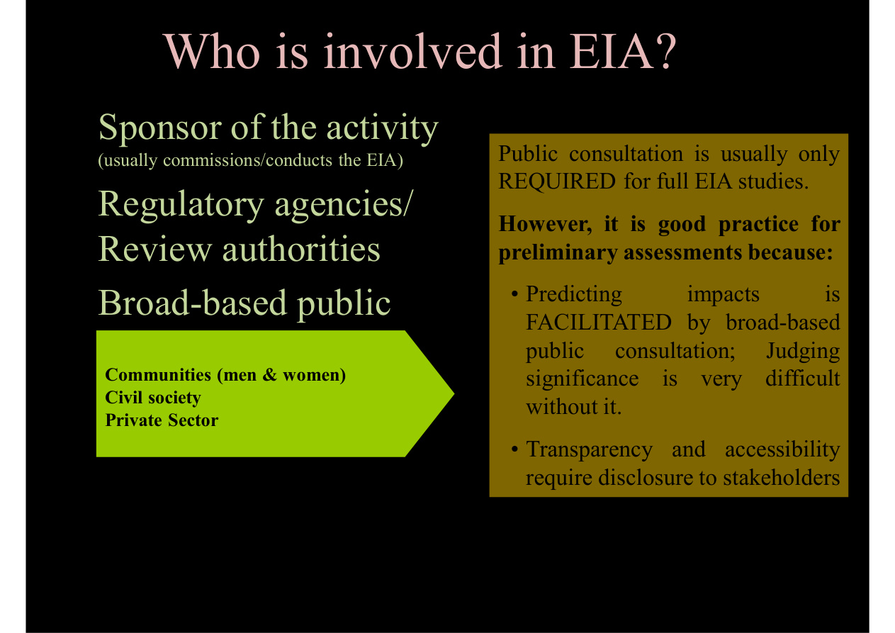
Who is involved in EIA?
- •Who is involved in EIA? Sponsor of the activity (usually commissions/conducts the EIA) Regulatory agencies/
Environmental Impact Assessment (EIA) evaluates the environmental consequences of a proposed development before statutory approval. Under India's EIA Notification 2006, projects undergo Screening to classify them into Category A (central clearance) or Category B (state clearance), followed by Scoping to define formal Terms of Reference (ToR) and baseline monitoring criteria.
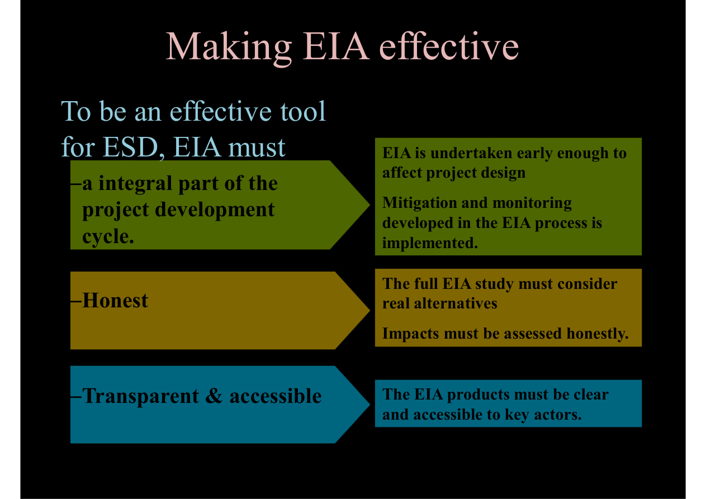
EIA is undertaken early enough to
- •EIA is undertaken early enough to affect project design Mitigation and monitoring developed in the EIA process is
Environmental Impact Assessment (EIA) evaluates the environmental consequences of a proposed development before statutory approval. Under India's EIA Notification 2006, projects undergo Screening to classify them into Category A (central clearance) or Category B (state clearance), followed by Scoping to define formal Terms of Reference (ToR) and baseline monitoring criteria.
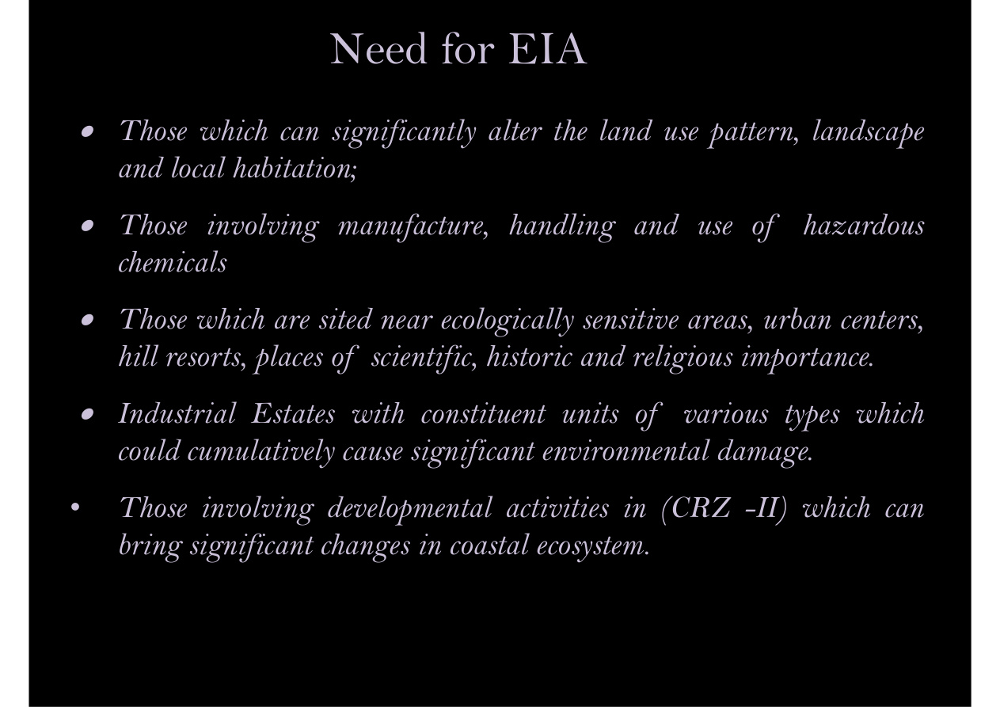
Those which can significantly alter the land use pattern, lan...
- •Those which can significantly alter the land use pattern, landscape and local habitation; Those involving manufacture, handling and use of hazardous
Those which can significantly alter the land use pattern, lan...: Those which can significantly alter the land use pattern, landscape and local habitation; Those involving manufacture, handling and use of hazardous. This material establishes quantitative limits, operational trade-offs, and core exam principles for Lecture 12.
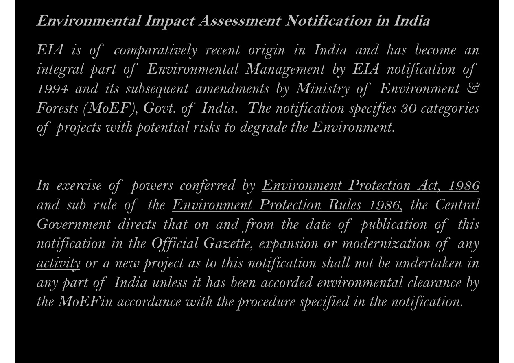
Environmental Impact Assessment Notification in India
- •Environmental Impact Assessment Notification in India EIA is of comparatively recent origin in India and has become an integral part of Environmental Management by EIA notification of
Environmental Impact Assessment (EIA) evaluates the environmental consequences of a proposed development before statutory approval. Under India's EIA Notification 2006, projects undergo Screening to classify them into Category A (central clearance) or Category B (state clearance), followed by Scoping to define formal Terms of Reference (ToR) and baseline monitoring criteria.
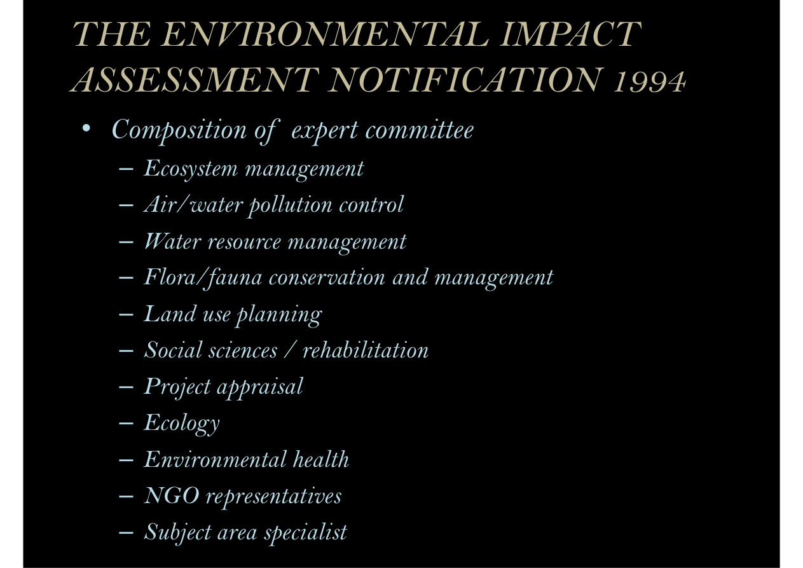
THE ENVIRONMENTAL IMPACT
- •THE ENVIRONMENTAL IMPACT ASSESSMENT NOTIFICATION 1994 • Composition of expert committee – Ecosystem management
THE ENVIRONMENTAL IMPACT: THE ENVIRONMENTAL IMPACT ASSESSMENT NOTIFICATION 1994 • Composition of expert committee – Ecosystem management. This material establishes quantitative limits, operational trade-offs, and core exam principles for Lecture 12.
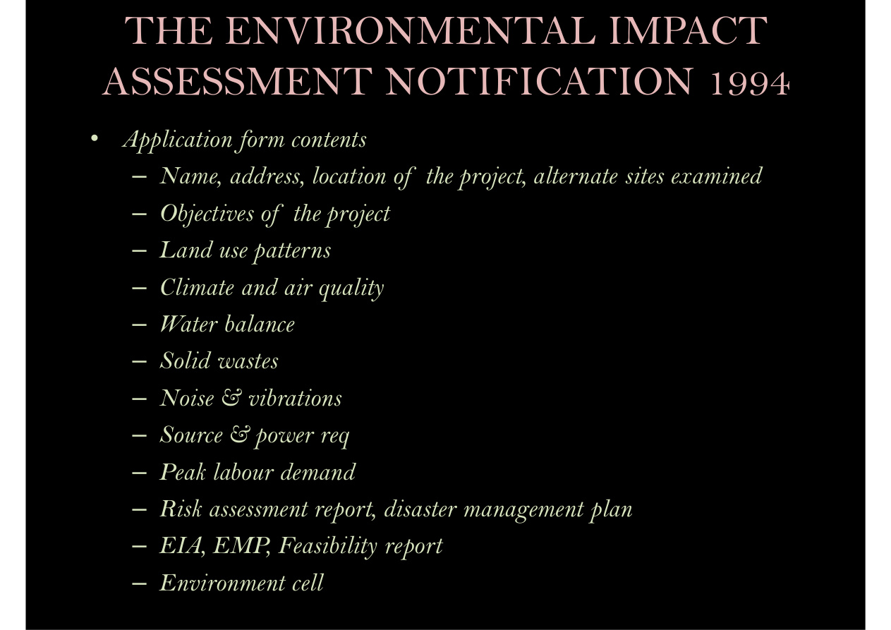
THE ENVIRONMENTAL IMPACT
- •THE ENVIRONMENTAL IMPACT ASSESSMENT NOTIFICATION 1994 Application form contents – Name, address, location of the project, alternate sites examined
THE ENVIRONMENTAL IMPACT: THE ENVIRONMENTAL IMPACT ASSESSMENT NOTIFICATION 1994 Application form contents – Name, address, location of the project, alternate sites examined. This material establishes quantitative limits, operational trade-offs, and core exam principles for Lecture 12.
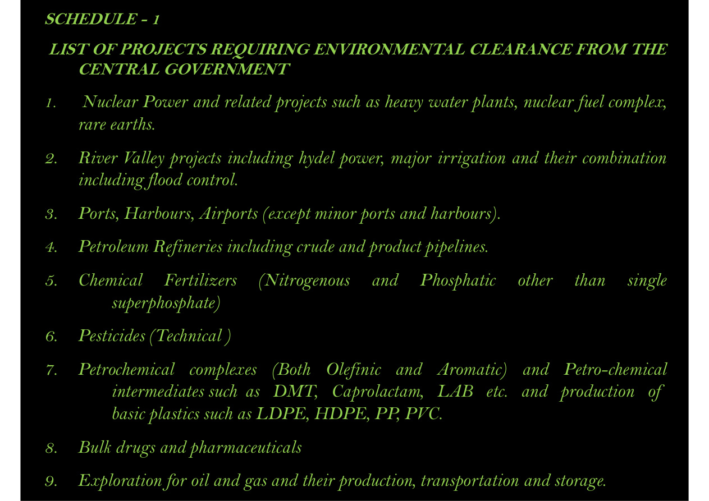
SCHEDULE - 1
- •SCHEDULE - 1 LIST OF PROJECTS REQUIRING ENVIRONMENTAL CLEARANCE FROM THE CENTRAL GOVERNMENT Nuclear Power and related projects such as heavy water plants, nuclear fuel complex,
SCHEDULE - 1: SCHEDULE - 1 LIST OF PROJECTS REQUIRING ENVIRONMENTAL CLEARANCE FROM THE CENTRAL GOVERNMENT Nuclear Power and related projects such as heavy water plants, nuclear fuel complex,. This material establishes quantitative limits, operational trade-offs, and core exam principles for Lecture 12.
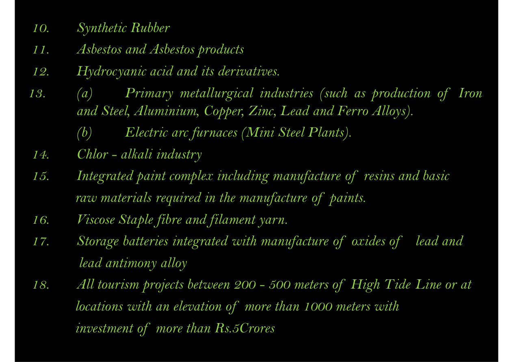
10.
- •10. Synthetic Rubber 11. Asbestos and Asbestos products
10.: 10. Synthetic Rubber 11. Asbestos and Asbestos products. This material establishes quantitative limits, operational trade-offs, and core exam principles for Lecture 12.
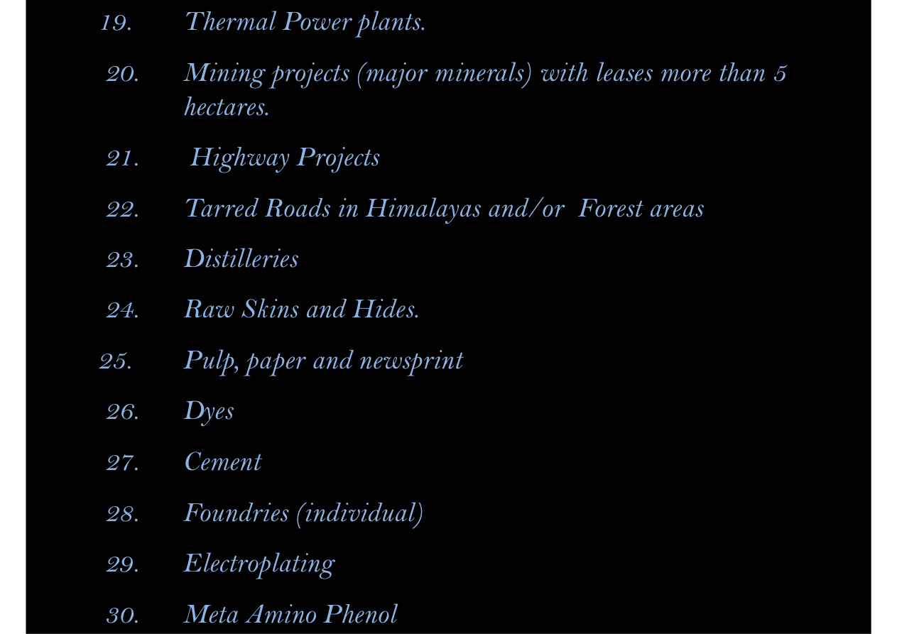
19.
- •19. Thermal Power plants. 20. Mining projects (major minerals) with leases more than 5
19.: 19. Thermal Power plants. 20. Mining projects (major minerals) with leases more than 5. This material establishes quantitative limits, operational trade-offs, and core exam principles for Lecture 12.
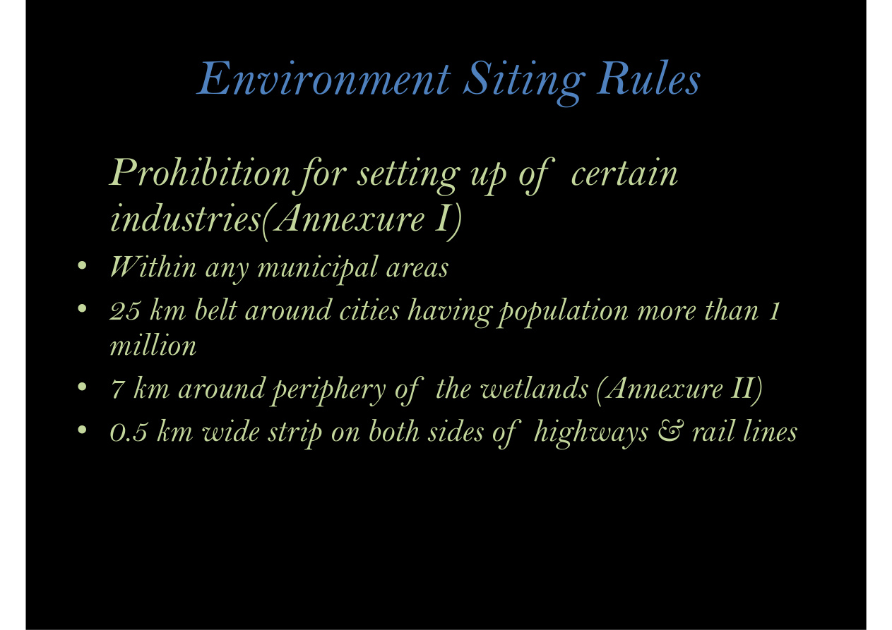
Environment Siting Rules
- •Environment Siting Rules Prohibition for setting up of certain industries(Annexure I) • Within any municipal areas
Environment Siting Rules: Environment Siting Rules Prohibition for setting up of certain industries(Annexure I) • Within any municipal areas. This material establishes quantitative limits, operational trade-offs, and core exam principles for Lecture 12.
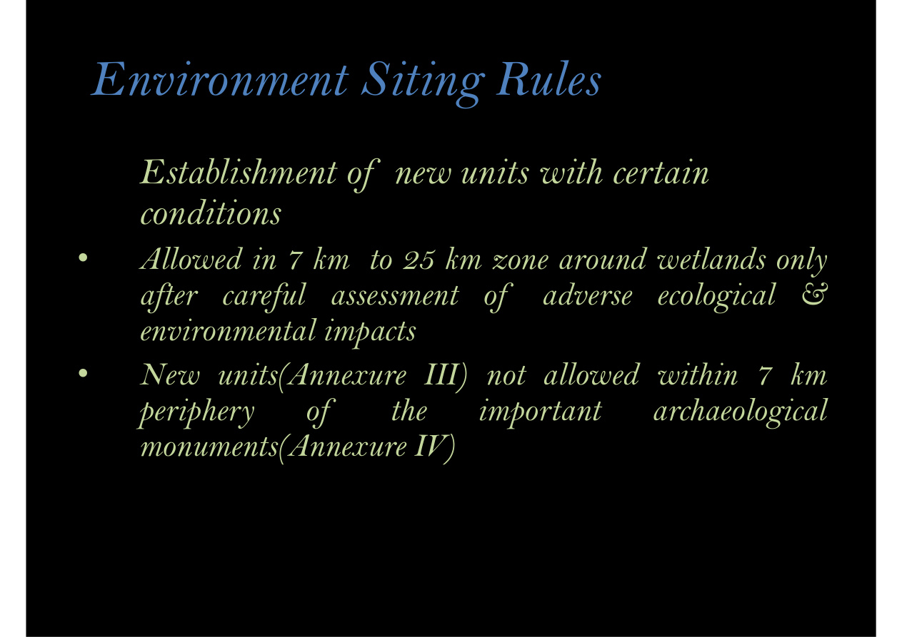
Environment Siting Rules
- •Environment Siting Rules Establishment of new units with certain conditions Allowed in 7 km to 25 km zone around wetlands only
Environment Siting Rules: Environment Siting Rules Establishment of new units with certain conditions Allowed in 7 km to 25 km zone around wetlands only. This material establishes quantitative limits, operational trade-offs, and core exam principles for Lecture 12.
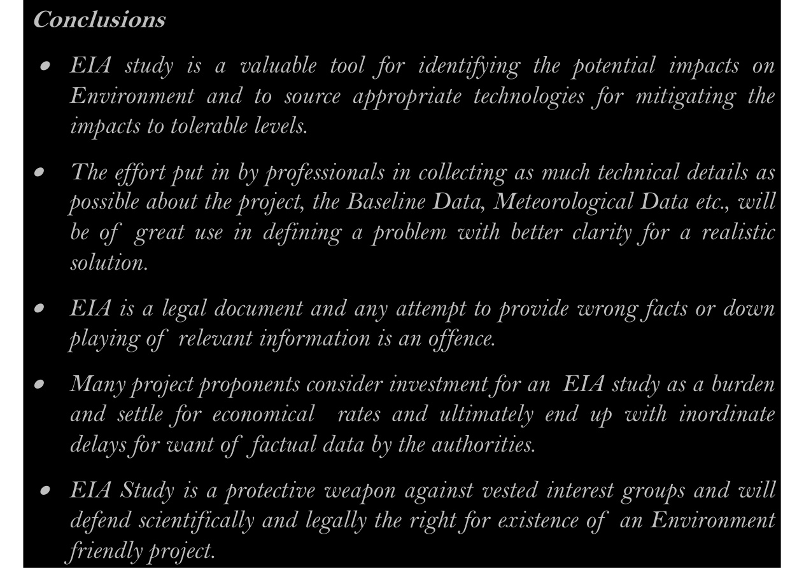
Conclusions
- •Conclusions EIA study is a valuable tool for identifying the potential impacts on Environment and to source appropriate technologies for mitigating the impacts to tolerable levels.
Environmental Impact Assessment (EIA) evaluates the environmental consequences of a proposed development before statutory approval. Under India's EIA Notification 2006, projects undergo Screening to classify them into Category A (central clearance) or Category B (state clearance), followed by Scoping to define formal Terms of Reference (ToR) and baseline monitoring criteria.
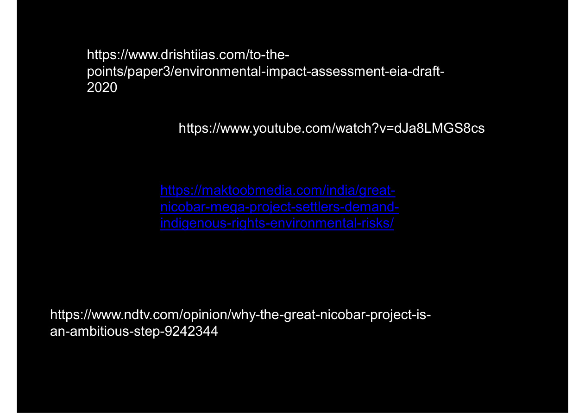
https://www.drishtiias.com/to-the-
Visual figure slide. See the high-resolution render on the left.
Environmental Impact Assessment (EIA) evaluates the environmental consequences of a proposed development before statutory approval. Under India's EIA Notification 2006, projects undergo Screening to classify them into Category A (central clearance) or Category B (state clearance), followed by Scoping to define formal Terms of Reference (ToR) and baseline monitoring criteria.
EIA Leopold Interaction Matrix & Impact Significance Evaluator
Evaluate developmental project actions against environmental receptors with interactive Magnitude and Importance scores.
| Environmental Receptor | Land Clearing (M / I) | Excavation & Blasting (M / I) | Wastewater Discharge (M / I) | Component Total Score |
|---|---|---|---|---|
| Ambient Air Quality | -4 / 6 (-24) | -7 / 8 (-56) | 0 / 0 (0) | -80 |
| Surface & Ground Water | -3 / 5 (-15) | -4 / 6 (-24) | -8 / 9 (-72) | -111 |
| Terrestrial Ecology & Flora | -9 / 9 (-81) | -5 / 6 (-30) | -1 / 3 (-3) | -114 |
| Local Employment & Economy | +5 / 6 (+30) | +6 / 7 (+42) | 0 / 0 (0) | +72 |
Active recall flashcards
Review definitions, reactions, and governing laws from the lecture slides before flipping.
Exam traps and common pitfalls
Common student misconceptions and subtle distinctions tested in exams.
- Exam trap: Confusing Scoping with Screening. Screening asks: 'Does this project need an EIA?' Scoping asks: 'What specific environmental topics and boundaries must the EIA investigate?'
- Exam note: Remember that Public Consultation consists of two components: 1. A public hearing at the site for locally affected persons. 2. Obtaining written responses from other concerned stakeholders.
Concept check quiz
Verify your understanding of core concepts from this lecture deck.
Slide reference gallery
Complete visual reference of all 32 slides with direct links to original presentation files.